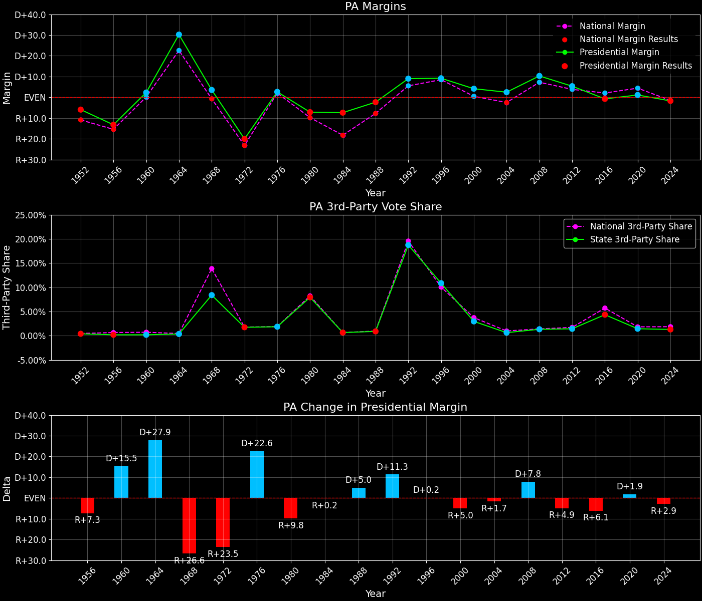
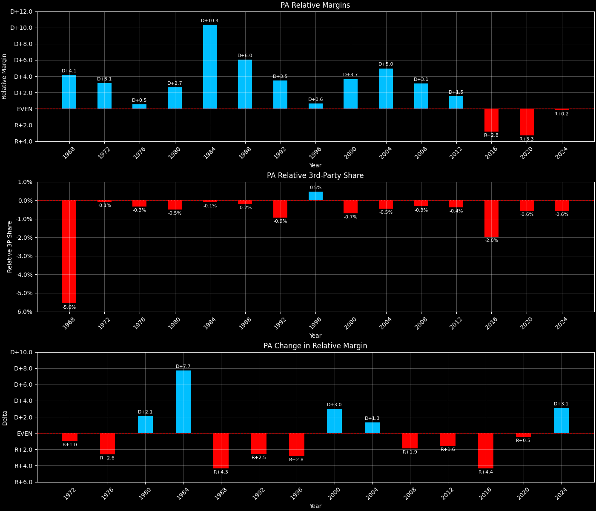
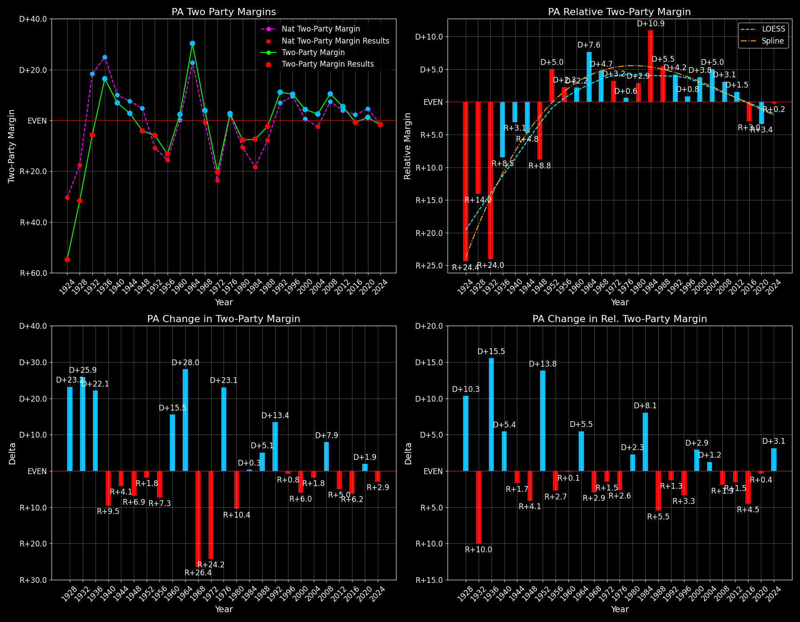

← Back to Map

Margins · 3P share · Pres. deltas

Relative margins · Relative 3P · Rel. deltas
Pennsylvania (PA) — Total Data
| Year | EVs | D | R | Margin | Rel. Margin | Nat. Margin | Margin Δ | Rel. Margin Δ | Nat. Margin Δ | Total votes |
|---|
| 1968 | 29 | 2,243,792(47.8%) | 2,076,926(44.2%) | D+3.6 | D+4.1 | R+0.6 | | | | 4,697,623 |
| 1972 | 27 | 1,789,065(39.8%) | 2,705,721(60.2%) | R+20.4 | D+3.1 | R+23.5 | R+23.9 | R+1.0 | R+23.0 | 4,494,786 |
| 1976 | 27 | 2,327,090(51.4%) | 2,203,053(48.6%) | D+2.7 | D+0.5 | D+2.2 | D+23.1 | R+2.6 | D+25.7 | 4,530,143 |
| 1980 | 27 | 1,931,421(43.1%) | 2,255,862(50.4%) | R+7.2 | D+2.7 | R+9.9 | R+10.0 | D+2.1 | R+12.1 | 4,476,951 |
| 1984 | 25 | 2,212,533(46.1%) | 2,584,289(53.9%) | R+7.8 | D+10.4 | R+18.1 | R+0.5 | D+7.7 | R+8.2 | 4,796,822 |
| 1988 | 25 | 2,222,355(49.1%) | 2,300,087(50.9%) | R+1.7 | D+6.0 | R+7.7 | D+6.0 | R+4.3 | D+10.4 | 4,522,442 |
| 1992 | 23 | 2,239,164(45.4%) | 1,791,841(36.3%) | D+9.1 | D+3.5 | D+5.6 | D+10.8 | R+2.5 | D+13.3 | 4,933,672 |
| 1996 | 23 | 2,215,819(49.5%) | 1,804,169(40.3%) | D+9.2 | D+0.6 | D+8.6 | D+0.1 | R+2.8 | D+3.0 | 4,473,950 |
| 2000 | 23 | 2,485,865(50.6%) | 2,280,983(46.4%) | D+4.2 | D+3.7 | D+0.5 | R+5.0 | D+3.0 | R+8.0 | 4,911,922 |
| 2004 | 21 | 2,937,657(51.1%) | 2,793,540(48.6%) | D+2.5 | D+5.0 | R+2.5 | R+1.7 | D+1.3 | R+3.0 | 5,752,836 |
| 2008 | 21 | 3,276,363(54.6%) | 2,655,885(44.3%) | D+10.3 | D+3.1 | D+7.3 | D+7.8 | R+1.9 | D+9.7 | 5,995,229 |
| 2012 | 20 | 2,990,154(52.1%) | 2,680,388(46.7%) | D+5.4 | D+1.5 | D+3.9 | R+5.0 | R+1.6 | R+3.4 | 5,741,877 |
| 2016 | 20 | 2,925,590(47.9%) | 2,970,080(48.6%) | R+0.7 | R+2.8 | D+2.1 | R+6.1 | R+4.4 | R+1.8 | 6,113,821 |
| 2020 | 20 | 3,456,837(49.9%) | 3,376,333(48.8%) | D+1.2 | R+3.3 | D+4.4 | D+1.9 | R+0.5 | D+2.3 | 6,921,024 |
| 2024 | 19 | 3,423,042(48.5%) | 3,543,308(50.2%) | R+1.7 | R+0.2 | R+1.5 | R+2.9 | D+3.1 | R+6.0 | 7,058,732 |
Column explanations
- Year
- Election year.
- EVs
- Number of electoral votes allocated to this state or unit.
- D
- Number of votes for the Democratic candidate (raw count(pct%)).
- R
- Number of votes for the Republican candidate (raw count(pct%)).
- Margin
- Margin between the two major-party candidates, including third-party votes ((D - R)/total).
- Rel. Margin
- The presidential margin relative to the national presidential margin (Margin - Nat. Margin).
- Nat. Margin
- The national presidential margin for that year, including third-party votes ((D_total - R_total)/total_votes).
- Δ
- Change (delta) in the value from the previous election year. Blank if no data for previous year.
- Total votes
- Total voter turnout or ballots cast (when provided).
Pennsylvania (PA) — Third-Party Data
| Year | Other votes | 3P Share | 3P Nat. Share | 3P Rel. Share |
|---|
| 1968 | 376,905(8.0%) | T+8.0 | T+13.6 | T-5.6 |
| 1972 | 0(0.0%) | | T+0.1 | T-0.1 |
| 1976 | 0(0.0%) | | T+0.3 | T-0.3 |
| 1980 | 289,668(6.5%) | T+6.5 | T+7.0 | T-0.5 |
| 1984 | 0(0.0%) | | T+0.1 | T-0.1 |
| 1988 | 0(0.0%) | | T+0.2 | T-0.2 |
| 1992 | 902,667(18.3%) | T+18.3 | T+19.2 | T-0.9 |
| 1996 | 453,962(10.1%) | T+10.1 | T+9.7 | T+0.5 |
| 2000 | 145,074(3.0%) | T+3.0 | T+3.7 | T-0.7 |
| 2004 | 21,639(0.4%) | T+0.4 | T+0.8 | T-0.5 |
| 2008 | 62,981(1.1%) | T+1.1 | T+1.4 | T-0.3 |
| 2012 | 71,335(1.2%) | T+1.2 | T+1.6 | T-0.4 |
| 2016 | 218,151(3.6%) | T+3.6 | T+5.5 | T-2.0 |
| 2020 | 87,854(1.3%) | T+1.3 | T+1.8 | T-0.6 |
| 2024 | 92,382(1.3%) | T+1.3 | T+1.9 | T-0.6 |
Column explanations
- Year
- Election year.
- Other votes
- Number of votes for third-party (other) candidates (raw count(pct%)).
- 3P Share
- Share of the vote received by third-party (other) candidates.
- 3P Nat. Share
- The national third-party share for that year (3P votes / total votes).
- 3P Rel. Share
- Third-party share relative to the national third-party share (3P share - Nat. 3P share).

Two-party margins · relative · deltas
Pennsylvania (PA) — Two-Party Data
| Year | 2-Party Margin | 2-Party Nat. Margin | 2-Party Rel. Margin | 2-Party Margin Δ | 2-Party Nat. Margin Δ | 2-Party Rel. Margin Δ |
|---|
| 1968 | D+3.9 | R+0.7 | D+4.5 | | | |
| 1972 | R+20.4 | R+23.6 | D+3.2 | R+24.3 | R+22.9 | R+1.4 |
| 1976 | D+2.7 | D+2.2 | D+0.5 | D+23.1 | D+25.8 | R+2.6 |
| 1980 | R+7.7 | R+10.6 | D+2.9 | R+10.5 | R+12.8 | D+2.4 |
| 1984 | R+7.8 | R+18.1 | D+10.4 | EVEN | R+7.5 | D+7.5 |
| 1988 | R+1.7 | R+7.8 | D+6.0 | D+6.0 | D+10.4 | R+4.3 |
| 1992 | D+11.1 | D+6.9 | D+4.2 | D+12.8 | D+14.7 | R+1.9 |
| 1996 | D+10.2 | D+9.5 | D+0.8 | R+0.9 | D+2.6 | R+3.4 |
| 2000 | D+4.3 | D+0.5 | D+3.8 | R+5.9 | R+8.9 | D+3.0 |
| 2004 | D+2.5 | R+2.5 | D+5.0 | R+1.8 | R+3.0 | D+1.2 |
| 2008 | D+10.5 | D+7.4 | D+3.1 | D+7.9 | D+9.8 | R+1.9 |
| 2012 | D+5.5 | D+3.9 | D+1.5 | R+5.0 | R+3.4 | R+1.6 |
| 2016 | R+0.8 | D+2.2 | R+3.0 | R+6.2 | R+1.7 | R+4.5 |
| 2020 | D+1.2 | D+4.5 | R+3.3 | D+1.9 | D+2.3 | R+0.4 |
| 2024 | R+1.7 | R+1.6 | R+0.2 | R+2.9 | R+6.1 | D+3.2 |
Column explanations
- Year
- Election year.
- 2-Party Margin
- Margin between the two major-party candidates, ignoring third-party votes ((D - R)/(D + R)).
- 2-Party Nat. Margin
- The national presidential margin for that year, including third-party votes ((D_total - R_total)/total_votes).
- 2-Party Rel. Margin
- The presidential margin relative to the national presidential margin (Margin - Nat. Margin).
- Δ
- Change (delta) in the value from the previous election year. Blank if no data for previous year.